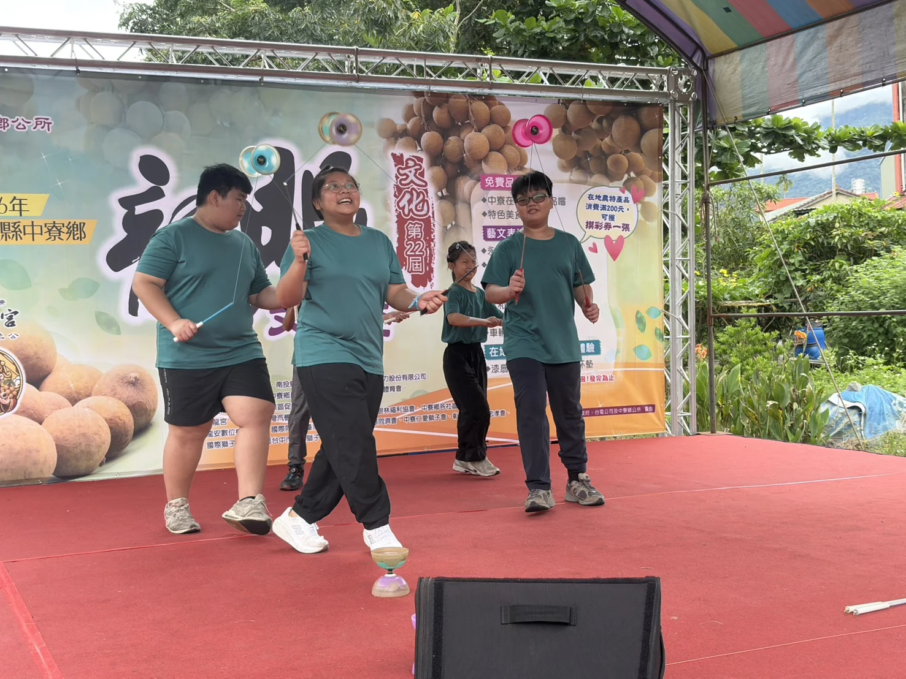

115學年度｜持續更新中
陪伴學習，
也打開更多可能
115學年度，永和國小持續從課後輔導出發，結合夜光天使、多元試探與社區展演，讓孩子在放學後不只有人陪，也有機會探索、實作與被看見。
課後輔導夜光天使多元試探社區展演
10/21 15:15 到校參訪階段成果持續更新
目前執行成果｜供10/21參訪前預覽
本網站為115學年度階段性紀錄，資料更新至2026年10月17日；目前以學校已實際執行的課後照顧、多元試探、社團與社區活動為主，相關申請計畫僅作為背景與後續規劃依據。
本網站為115學年度階段性紀錄，資料更新至2026年10月17日；目前以學校已實際執行的課後照顧、多元試探、社團與社區活動為主，相關申請計畫僅作為背景與後續規劃依據。

CURRENT SNAPSHOT
目前已經發生的學習
以下數字來自不同計畫申請資料，代表的是不同支持範圍，並不互相加總。
22課後輔導申請規劃人數
目前相關基金會補助仍在申請階段，尚未核定。
目前相關基金會補助仍在申請階段，尚未核定。
22夜光天使申請人數
2班，延伸課業、多元技能與生活技能陪伴。
2班，延伸課業、多元技能與生活技能陪伴。
22活化多元試探目前學生數
藝術、肢體與新興科技等不同領域。
藝術、肢體與新興科技等不同領域。
閱讀提醒：目前已核定通過的是活化教學與多元計畫、兒福聯盟課後社團補助；夜光天使點燈計畫與宏將蒲公英課後輔導仍在申請中。網站以實際執行情形為主，並依各計畫核定狀態分開呈現。活化多元試探以115學年度目前22人為準。
HOW SUPPORT HAPPENS
四條路徑，接住孩子放學後的時間
穩定陪伴
以課後輔導與夜光天使為核心，提供課業指導、個別協助與持續的學習支持。
多元探索
小提琴、舞蹈、扯鈴與新興科技，讓孩子在不同領域找到興趣與能力。
動手實作
從科技操作到生活任務，透過做中學、討論與合作，累積解決問題的經驗。
走進社區
把平日練習帶到社區活動與正式舞台，在真實情境中展現學習成果。

EXPLORE & CREATE
從興趣出發，讓孩子試著做、試著表現

小提琴
從基本技巧、聆聽到演奏，逐步累積舞台表現經驗。

舞蹈
透過肢體開發與合作，建立節奏感、自信與表達力。

扯鈴
把反覆練習轉化成技巧，也為團隊展演打下基礎。

新興科技
以操作、挑戰與合作開啟科技探索。
FROM PRACTICE TO COMMUNITY
從平日練習，走到真正的舞台
課後培力並不停在校園裡。孩子把扯鈴練習帶到社區活動，面對觀眾、完成演出，也在參與在地活動的過程中累積新的生活經驗。
看社區展演
SUPPORT MAP
不同資源，共同接住放學後的需要
已通過
活化教學與多元計畫
支持小提琴、舞蹈、扯鈴與新興科技等多元試探與實作課程。
已通過
兒福聯盟課後社團補助
支應課後社團相關課程，作為學校多元課後學習的重要資源之一。
申請中
夜光天使點燈計畫
目前尚在申請階段，規劃延伸課業、多元技能與生活技能陪伴。
申請中
宏將蒲公英課後輔導
目前尚在申請階段，規劃支應課後輔導與學科支持。
經費補充：上述計畫補助不足的部分，由學校教育經費支應，以維持課後學習與照顧的持續進行。
留下來學習
找到興趣
動手實作
走出去展現
這不是年度結案，而是一份持續長大的紀錄
115學年度網站從執行初期就開始累積。之後每增加一批課程照片、活動紀錄或可佐證的成果，就更新既有章節；學年度末再補上完整數據與年度回顧，不必重新從零製作。
查看目前更新進度